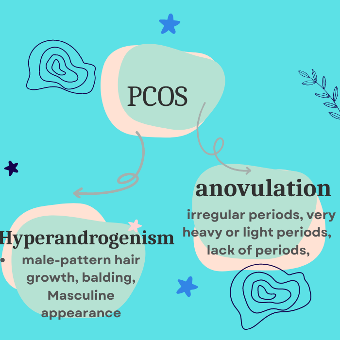

|
PCOS stands for "Polycystic Ovarian Syndrome". It is a heterogenous disease characterised by Hyperandrogenism and chronic anovulation.
Hyperandrogenism is defined by the state caused by excessive production and secretion of androgens. Anovulation happens when an egg (ovum)
doesn't release from your ovary during your menstrual cycle.
Features based on which an adolescent girl can be diagonosed of 'being
at risk'
are "menstrual irregularity"and "clinical signs of excess male hormone in body".
The symptoms will be discussed clearly later. Pelvis ultrasound are not needed
for the diagnosis of PCOS in adolescent girls. The ones who are at risk and
those with a confirmed PCOS diagnosis, both the condition should be managed with
a healthy lifestyle interventions, awareness and therapeutic interventions
targeting their symptoms.
|

|